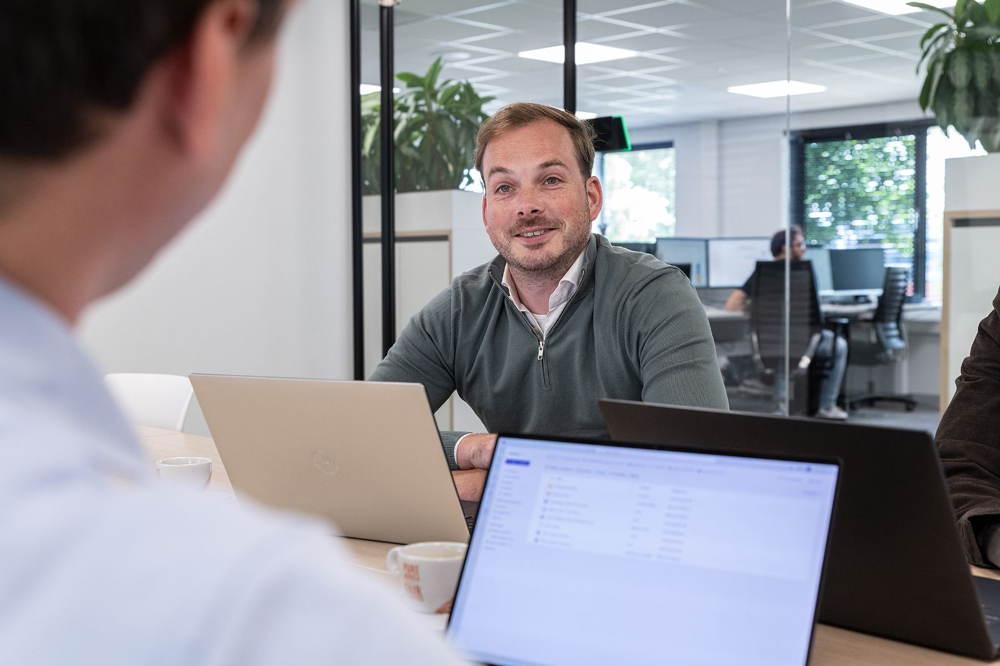

Transformation
Consultant BIM en digitalisering
32-40 uur · Rijssen en op locatie · € 4.200 tot € 5.800 bruto p.m. (indicatief)Je begeleidt bouw- en installatiebedrijven bij BIM, software en digitaal samenwerken. Van pilot tot uitrol, van MT-sessie tot werkvloer. Met eigen bouwervaring.
Interesse?
Geen sollicitatiebrief nodig. Bel of WhatsApp Melvin voor een eerste gesprek, of mail je cv met twee regels over waarom.
Bel Melvin: 06 342 748 73Mail je cvWat je doet
Je werk
Afwisselend, met veel eigenaarschap en klanten in de hele sector.
01
Implementatietrajecten leiden bij klanten, van analyse tot borging
02
Protocollen, ILS en werkinstructies opstellen die mensen echt gebruiken
03
Trainingen geven in Revit, Solibri of ACC als dat het traject vraagt
04
Meedenken met directie en HR over rollen en functies
Wie we zoeken
Jij
Minimaal vijf jaar ervaring in bouw of installatie, waarvan een deel met BIM-coördinatie. Je kunt uitleggen, luisteren en tegenspreken.

Eerst een kop koffie?
Kom langs in Rijssen of bel Melvin. Geen procedure, gewoon een gesprek.
We reageren dezelfde werkdag. Liever eerst zelf kijken? Doe de zelfscan.
Melvin van PuffelenDirecteur BIM4ALL Academie“Meestal is één gesprek genoeg om te weten of, en hoe, we kunnen helpen.”